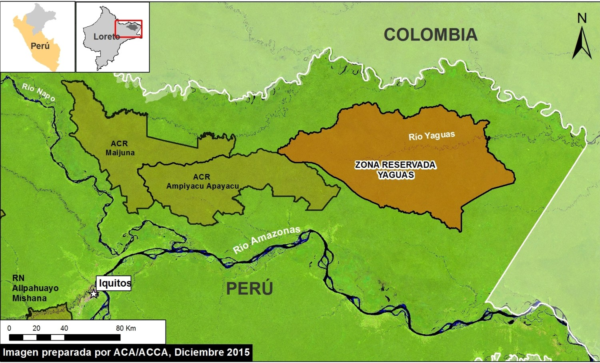

Ubicación

El área que ocupan los Yaguas se extiende entre el río Putumayo y el Yavarí, en la frontera entre Perú y Brasil. El eje central de sus asentamientos es el río Amazonas.
Los yagua se encuentran distribuidos en ambos lados del río Amazonas en el Perú y Colombia, donde ocupan 4.209 hectáreas en el Resguardo de Santa Sofía y el Progreso.